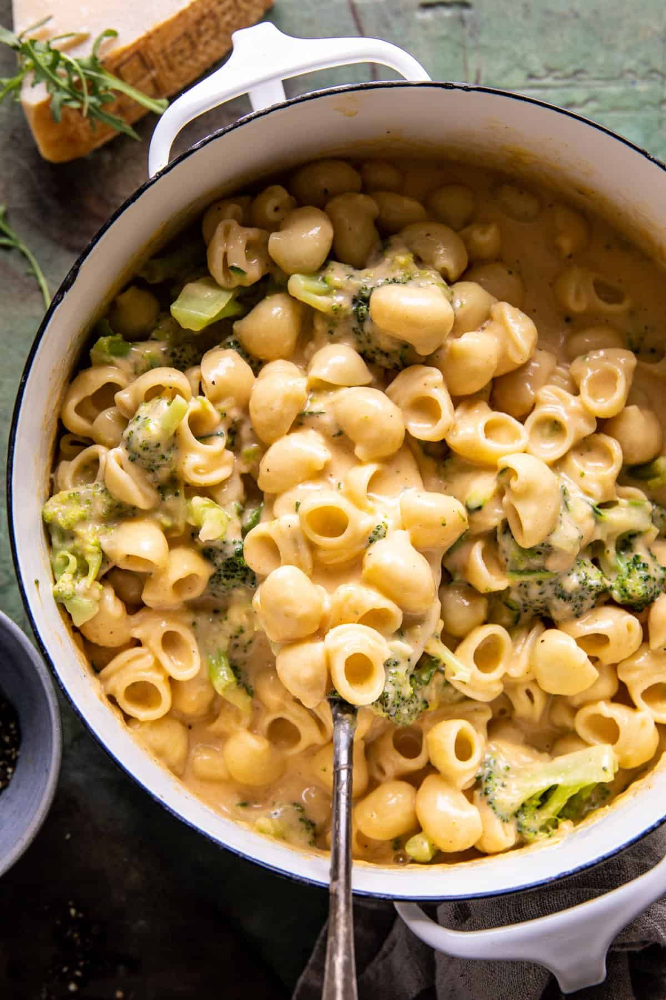

Kitchen Copilot - VeCook
Home
Start Cooking

Mac n Cheese
Est time
45 minutes
Start Cooking
>
Ingredients
2 Servings
▼
1 Serving
2 Servings
4 Servings
6 Servings
Ingredients
Measurement
Pastry flour
1 C
Cocoa powder
0.50 C
Salt
0.50 TSP
Baking powder
1 TSP
Baking soda
0.25 TSP
Sugar
0.50 C
Egg
1 LARGE
Vanilla
1 TSP
Blueberries
1 C
2
No
Apply!
Recommend based on Google Fit data
Make it vegan!
Make it healthier!